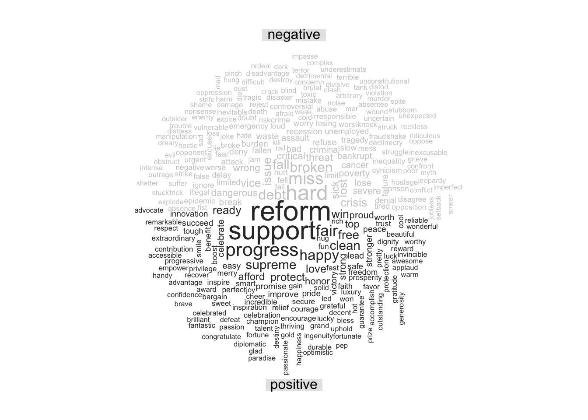
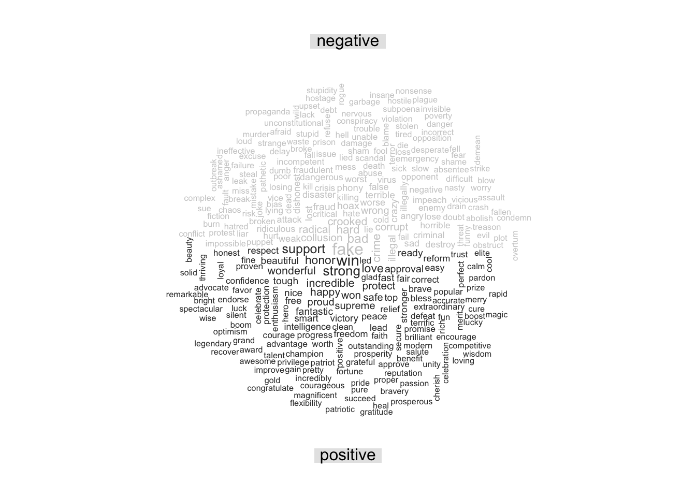

#wrangling Trump's tweets
trump_tweets_ym <- read_csv("~/Desktop/SDSProjects/maryw-1.github.io/Trumps_Legcy.csv") |>
mutate(timestamp = mdy_hm(date),
year = str_extract(timestamp, "(\\d{4})")) |>
filter(year >= 2016) |>
mutate(timestamp = as.Date(mdy_hm(date)),
year_month = str_extract(timestamp, "(\\d{4}-\\d{2})"),
year_month = ym(year_month),
president = 'Trump') |>
rename(tweet = text) |>
select(timestamp, tweet, year_month, president, year)
#wrangling Obama's tweets
obama_tweets_ym <- read_csv("~/Desktop/SDSProjects/maryw-1.github.io/obama.csv") |>
mutate(year = str_extract(Timestamp, "(\\d{4})"),
year = as.numeric(year),
president = "Obama") |>
filter(year >= 2006 , year <= 2017) |>
mutate(year_month = str_extract(Timestamp,"(\\d{4}-\\d{2})"),
year_month = ym(year_month)) |>
rename(tweet = Embedded_text,
timestamp = Timestamp) |>
select(timestamp, tweet, year_month, president, year)
#combining the two datasets together;
obama_and_trump <- rbind(obama_tweets_ym, trump_tweets_ym)Sentiment Analysis on Obama and Trump Tweets
Introduction
We are interested in how former president Obama and Trump tweet on their personal account. Along with their access to the @POTUS account on Twitter, they also had access to their own personal account. Since @POTUS is the official account for the President of the United States, I was less curious in exploring what they tweeted on this particular account during their presidency; instead, I was interested in what both Obama and Trump would tweet on their personal Twitter accounts. Although both Obama’s and Trump’s Twitter accounts were monitored, they had more freedom on what they posted on their personal accounts rather than the @POTUS account. In this project, I will explore the differences in how Obama and Trump would tweet during their presidency. We begin by data wrangling both Obama’s and Trump’s tweets in order to make meaningful analyses. During this process, I have decided to only include the years of their respective presidency terms. I felt it was more important to analyse how they interacted with the media when they were representing our country.
Before we do any sentiment analysis, let us analyse how many tweets Obama and Trump tweeted during their presidency.
obama_and_trump |>
group_by(president) |>
count() |>
ggplot(aes(x = president, y = n)) +
geom_col() +
labs(
x = "President",
y = "Number of Tweets",
title = "Number of Tweets by President",
subtitle = "During their respective presidential terms")These results really surprised me. Even though President Obama served two terms, he only made 10519 total tweets, while Trump made a whopping 30605 tweets during his one term. It seems like Trump has a big mouth, and likes to tweet, considering he tweeted three times as much during his presidency compared to Obama. After seeing how much Obama and Trump tweeted, let us analyse how frequently they would tweet during their presidency.
obama_and_trump |>
group_by(year_month, president) |>
count() |>
ggplot(aes(x = year_month, y = n)) +
geom_line() +
facet_wrap(~president) +
labs(title = "Frequency of Tweets During Respective Presidency" ,
x = "Year",
y = "Number of Tweets")Even though Obama and Trump served in different terms, we are still able to analyse how often each president would tweet. In just the year 2020, Trump tweeted around 12200 times. Obama did not tweet as much as Trump; however, this might be because social media was not as widely used during 2008-2016. His maximum number of tweets was in the year 2012, with a total of 2652 tweets. As the years went on, social media became more prevalent to the daily lives of many, which might explain the why Trump felt the need to tweet more frequently.
After our initial analysis of Obama’s and Trump’s tweets, we can do more data wrangling to make the data set more usable. First, let us convert all the tweets into lower case, and removing the special characters of “@”, “#”, “:”, quotation marks, etc. In addition to removing these special characters, I decided to remove any links that are present. Links offer little to no information, and is not necessary for our analysis of interest. In order to do more meaningful analysis in regards to both Obama’s and Trump’s tweets, let us use the unnest_tokens to create a new column of individual words based on their respective tweets. After creating this new column, we must remove all the stop_words or words that provide little to no importance in sentiment analysis.
obama_and_trump <- obama_and_trump |>
mutate(tweet_lower = str_to_lower(tweet),
tweet_lower = str_remove_all(tweet_lower, "\\@"),
tweet_lower = str_remove_all(tweet_lower, "https.+"),
tweet_lower = str_remove_all(tweet_lower, "\\#"),
tweet_lower = str_remove_all(tweet_lower, "\\:"),
tweet_lower = str_remove_all(tweet_lower, '"')) |>
filter(tweet_lower != "") |>
unnest_tokens(word, tweet_lower)
obama_and_trump <- obama_and_trump |>
anti_join(stop_words)
word_list <- as_tibble(qdapDictionaries::DICTIONARY)
obama_and_trump <- obama_and_trump |>
semi_join(word_list)
obama_and_trump <- obama_and_trump |>
filter(word != "president", word != "trump")After removing these special characters and links, I realized that in some of their tweets, there were either typos, or they were responding to other Twitter users. Thus, I needed to use the function semi_join my obama_and_trump data set with DICTIONARY in the qdapDictionaries library to remove words that are not are not in the English language. In addition to doing so, I’ve decided to remove the words of “Trump” and “president” because I felt it was unnecessary to include them in my analysis.
Quick Analysis of Names Mentioned
name_list <- as_tibble(qdapDictionaries::NAMES) |>
rename("word" = "name") |>
mutate(word = str_to_lower(word))
obama_and_trump_names <- obama_and_trump |>
semi_join(name_list) |>
rename(name = word) |>
filter(name != "america", name != "china", name != "florida")Joining with `by = join_by(word)`obama_and_trump_names |>
group_by(president, name) |>
count() |>
arrange(desc(n)) |>
pivot_wider(names_from = president, values_from = n ) # A tibble: 194 × 3
# Groups: name [194]
name Trump Obama
<chr> <int> <int>
1 love 407 77
2 bill 358 122
3 mike 214 2
4 major 206 23
5 hope 205 27
6 guy 184 4
7 chance 124 172
8 chuck 132 4
9 mark 122 16
10 page 101 19
# ℹ 184 more rowsTrump talks a lot out Joe and Hillary, while Obama talks a lot about Michelle.
Since we are doing sentiment analysis, let us implement both the categorical and numerical emotion scale. We do that with the following code: get_sentiments("nrc"), which categorizes words to a corresponding emotion. get_sentiments("afinn") categorizes words numerically, based on how negative or positive the word is.
get_sentiments("nrc") has ten distinct values: trust, fear, negative, sadness, anger, surprise, positive, disgust, joy, anticipation while get_sentiments("afinn") takes on the value from (-5,5).
Word Cloud for Obama
obama_and_trump |>
filter(president == "Obama") |>
inner_join(get_sentiments("bing")) |>
count(word, sentiment, sort = TRUE) |>
acast(word ~ sentiment, value.var = "n", fill = 0) |>
comparison.cloud(scale = c(2, .5), colors = c("gray80", "gray20"),
max.words = 300, title.size = 1)
Above, we can see the word cloud for Obama; it displays the 300 most popular words he uses. He uses the words “support,” “reform,” ” work,” “progress,” “protect,” and “inspire” which all have positive connotations.
Word Cloud for Trump
obama_and_trump |>
filter(president == "Trump") |>
inner_join(get_sentiments("bing")) |>
count(word, sentiment, sort = TRUE) |>
acast(word ~ sentiment, value.var = "n", fill = 0) |>
comparison.cloud(scale = c(1, .5), colors = c("gray80", "gray20"),
max.words = 300, title.size = 1)
Trump’s word cloud shows that some of this popular words are also “support,” “great,” “stronger,” “protection,” “honor,” and “wonderful”.
When comparing the word clouds of the two, I was surprised about how hard it is to make out some of the words in Trumps cloud. His most popular word seems to be the word “great,” however, I think it is attributed to his slogan. From the word cloud alone, one can easily tell that Obama talked about “support,” “reform,” “progress,” “work,” “debt,” and “broken” most of the time because these words are the biggest. In Trump’s case however, it is harder to tell what he would tweet about, since there are no clear standouts.
Sentiment Analysis
How do presidents talk on Twitter? On average, how often do they use words with negative connotations, and how often do they use words with positive connotations? Is there a difference between the two. We begin our analysis by joining our data set with the “nrc” sentiments tibble.
pres_analysis <- obama_and_trump |>
inner_join(get_sentiments("nrc"), relationship = "many-to-many")
n1 <- pres_analysis |>
filter(president == "Obama") |>
count(sentiment) |>
mutate(sentiment = fct_reorder(sentiment, n)) |>
ggplot(aes(x = sentiment, y = n, fill = sentiment)) +
geom_col(show.legend = FALSE) +
theme(axis.text.x = element_text(angle = 60, hjust = 0.5, vjust = 0.5)) +
ylim(0, 30000) +
labs(x="Sentiment", y="Count", title= "Obama")
n2 <- pres_analysis |>
filter(president == "Trump") |>
count(sentiment) |>
mutate(sentiment = fct_reorder(sentiment, n)) |>
ggplot(aes(x = sentiment, y = n, fill=sentiment)) +
geom_col(show.legend = FALSE) +
theme(axis.text.x = element_text(angle = 60, hjust = 0.5, vjust = 0.5)) +
labs(x = "Sentiment", y = "Count", title= "Trump")
grid.arrange(n1, n2, nrow=1)The figure above shows how often each president would use words with a certain sentiment. It seems Obama regularly words that are associated with positivity, trust, anticipation and negativity. While Trump regularly used words that are associated with positivity, negativity, trust, anticipation and fear.
It is surprising to see that Trump used a comparable number of words with positive and negative connotations. An important factor to consider is that the data is influenced by Trump’s greater volume of tweets compared to Obama’s. While it may appear that Trump exhibited more positive tweeting behavior, this observation may not be entirely accurate.
In addition to exploring their respective sentiment, I was curious on how their would change with respect to time.
pres_year_analysis <- obama_and_trump |>
inner_join(get_sentiments("bing"), relationship = "many-to-many")
t1 <- pres_year_analysis |>
filter(president == "Obama") |>
group_by(year_month) |>
count(sentiment) |>
spread(sentiment, n) |>
mutate(score = positive - negative) |>
drop_na() |>
ggplot(aes(x = year_month, y = score)) +
scale_x_date(limits=c(as.Date("2008-03-01"), as.Date("2016-12-31")), date_breaks = "3 month", date_labels = "%b") +
geom_line(stat="identity", col="blue") + geom_smooth(col="red") +
labs(title="Sentiment Barack Obama") +
theme(axis.text.x = element_text(angle = 45, hjust = 1))
t2 <- pres_year_analysis |>
filter(president == "Trump") |>
group_by(year_month) |>
count(sentiment) |>
spread(sentiment, n) |>
mutate(score = positive - negative) |>
drop_na() |>
ggplot(aes(x = year_month, y = score)) +
scale_x_date(limits=c(as.Date("2016-01-01"), as.Date("2021-01-01")), date_breaks = "3 month", date_labels = "%b") +
geom_line(stat="identity", col="blue") + geom_smooth(col="red") +
labs(title ="Sentiment Donald Trump") +
theme(axis.text.x = element_text(angle = 45, hjust = 1))
grid.arrange(t1, t2, ncol=1)The figure above illustrates how Obama’s and Trump’s sentiment changed throughout their respective term. Notice how Obama’s graph has way more points on the x-axis, this is because he served two terms, as opposed to one term. Obama’s uses more positive words; the graph shows there is a slight upward trend in his sentiment score.
However, in the case of Trump, his sentiment score was more variable, which is also shown in the light gray band, which shows the standard error of the points. Trump’s standard error is bigger, which indicates that we expect that our estimate of his sentiment score is more variable than that of Obama’s. Around April of 2019, Trump had a sentiment score of around 350; however, just by doing a quick Google search regarding his tweets, they are far from positive.
Again, similar to the last graph, notice how it seems like Trump’s sentiment score is higher than Obama’s; however, this is due to Trump’s massive amount of tweets.
Conclusion
Although it was fun and interesting to perform sentiment analysis on both President Obama and President Trump, we have to remember that all of these words are taken out of context. Even though it seems like one president has a higher sentiment score, it might not be a reality. If I were to do a similar kind of sentiment analysis in the future, I would definitely include phrases such as their campaign slogans. It would have been more interesting to see if there were certain phrases that they would say, or even mention a particular country a significant amount. Also it is important to notice that the results of the analysis is very skewed because Trump tweeted far more than Obama, which might make it appear like one person had a higher sentiment score than the other.